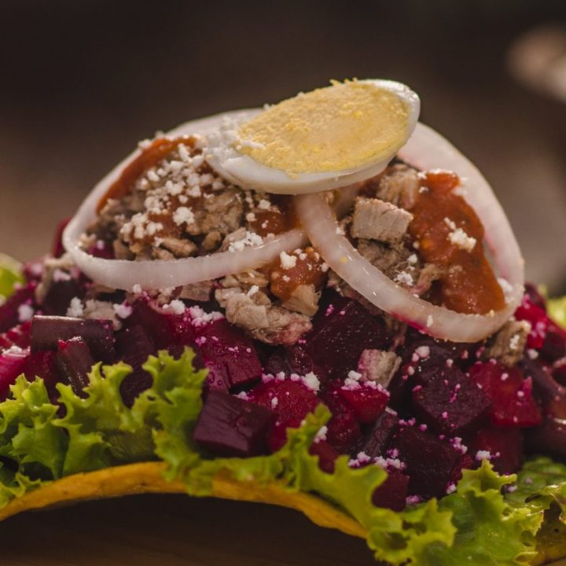

Platillo colorido
Las enchiladas

Las enchiladas destacan por su presentacion viva y por la combinacion de ingredientes colocados sobre una tortilla. Son un ejemplo claro de mezcla cultural y de cocina popular muy reconocible.